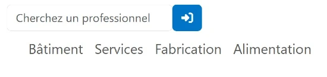
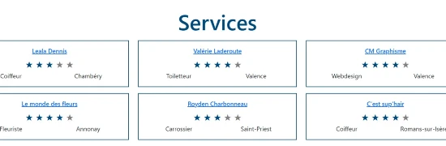

1
Choisir la catégorie dans le menu
Sélectionner dans le menu la catégorie de l'artisan (bâtiment, services, fabrication, alimentation) pour voir la liste apparaître.
Vous pouvez également utiliser l'outil de recherche, en haut de cette page pour trouver des professionnels grâce à un mot-clé (nom, ville, catégorie, spécialité...)


2
Choisir un artisan
Pour lire toutes les informations sur les professionnels, cliquez sur leur nom, une page dédiée s'ouvrira.
3
Remplir le formulaire de contact
Vous pourrez alors contacter l'artisan via le formulaire. Attention à bien remplir toutes les informations demandées !
Une réponse vous sera apporté par le professionnnel sous 48 heures ouvrées.